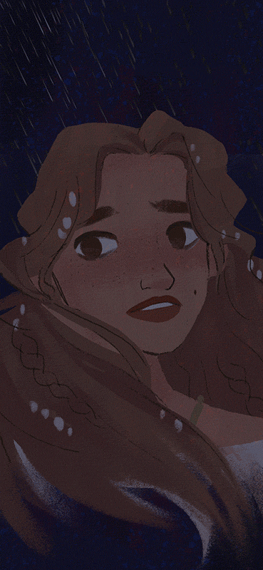
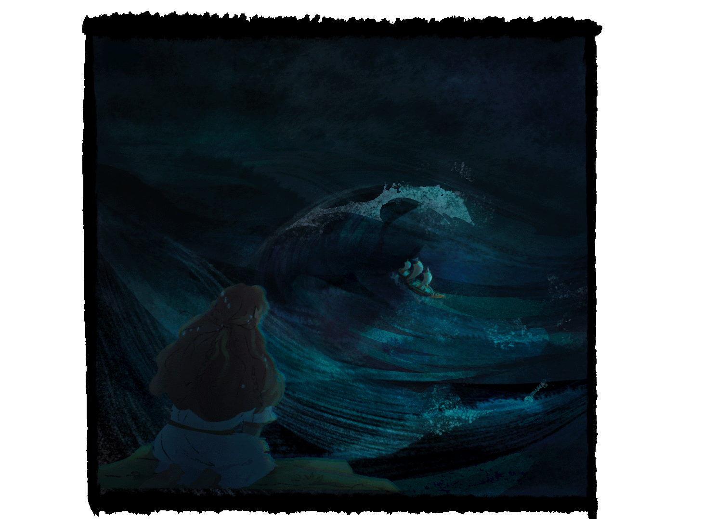
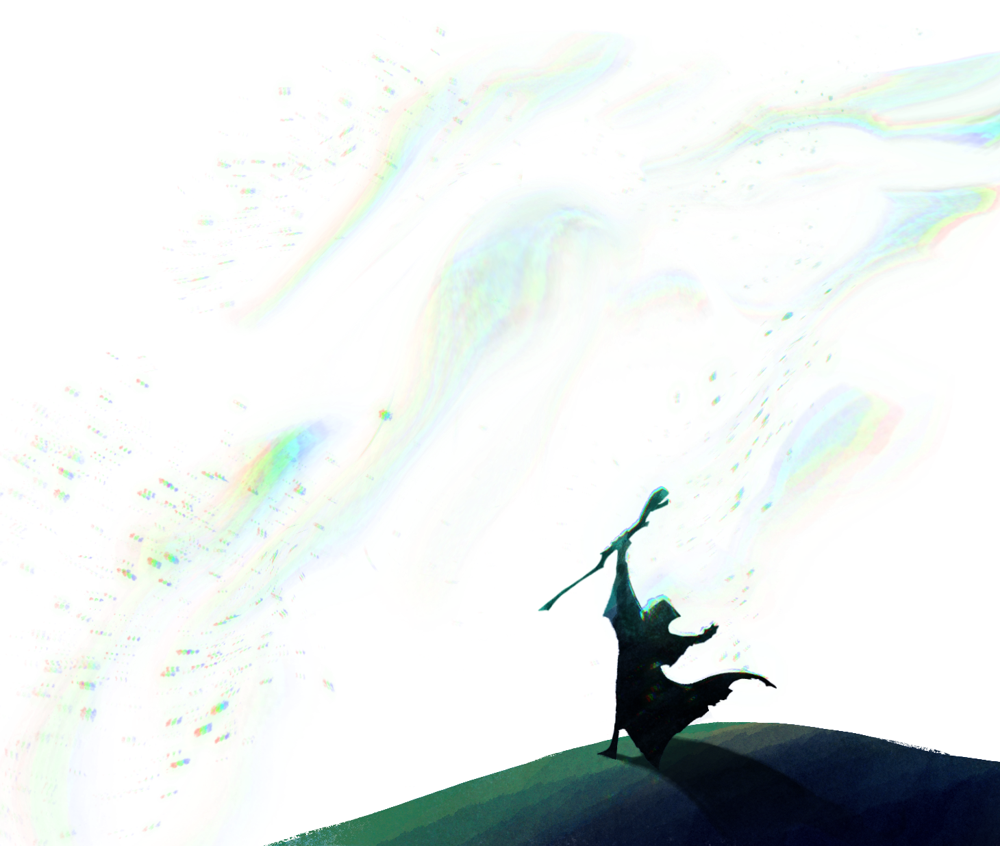
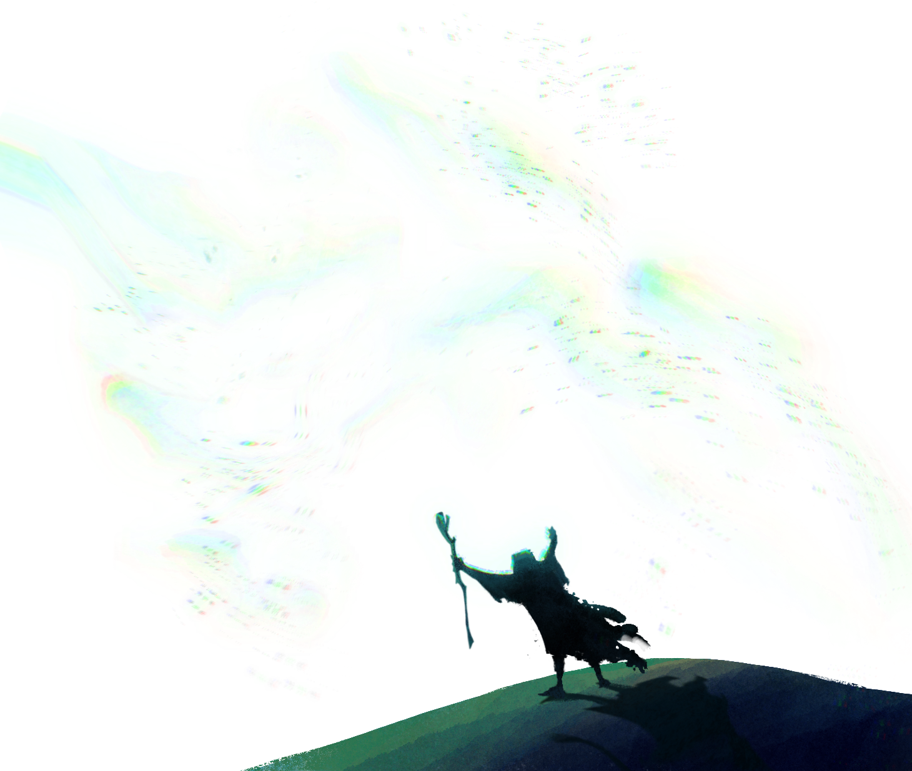
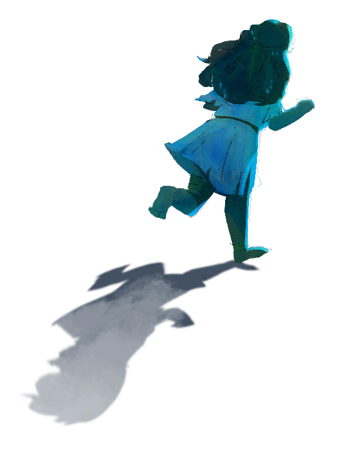
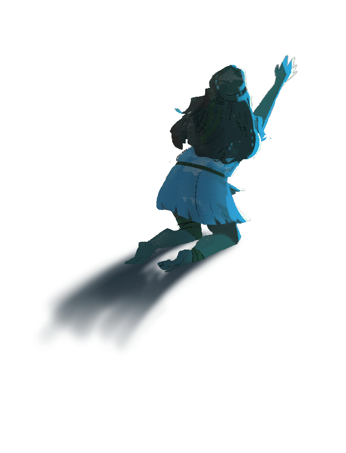

Act 1
"O, I have suffered
with those that I saw suffer!"
Shakespeare's The Tempest 1.2.5-6
Wonder, Miranda

You feel the storm more
than you see it.
Anguish, fear, and a hot familiar rage.


Your father raises his voice,
and he is obeyed.

Anger is his power.
To be loved means to submit

After all -

who can stand against a storm?